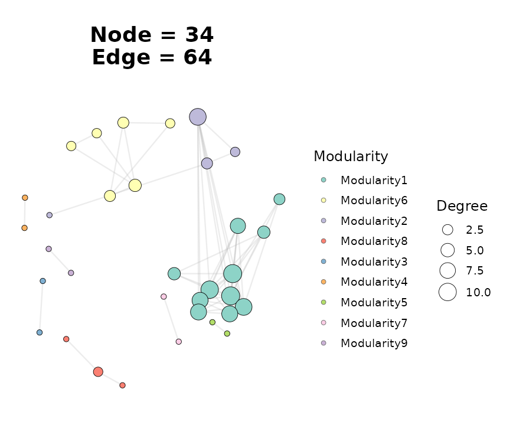
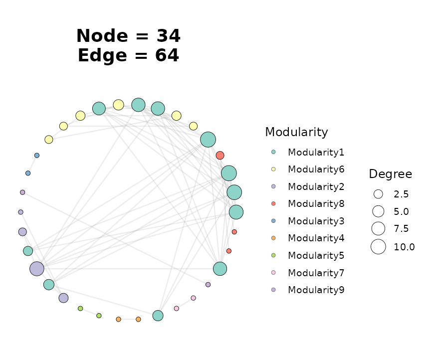
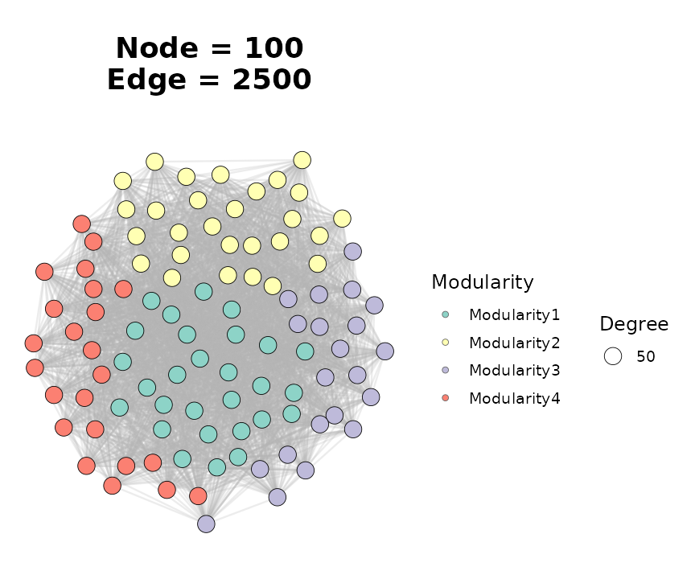
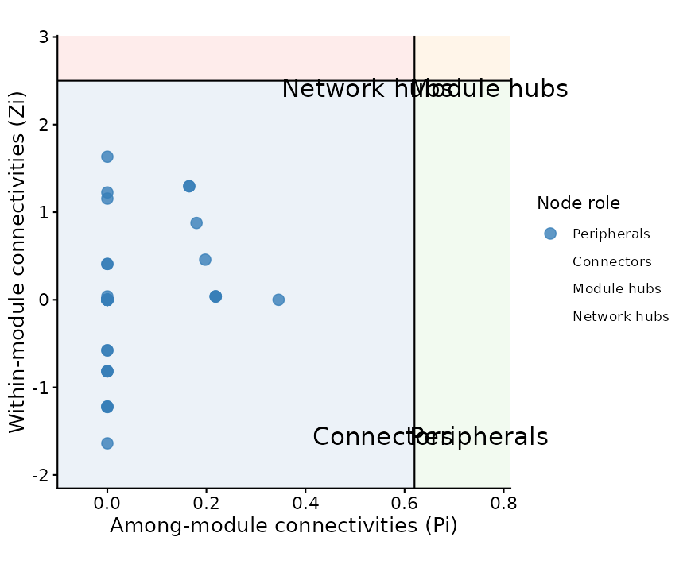

Correlation-based Network Pipelines
Source:vignettes/correlation-networks.Rmd
correlation-networks.RmdOverview
This vignette walks through the correlation-network family of
builders in ggNetView. These functions turn one or more
numeric abundance / expression tables into a unified, module-annotated
graph object that can be plotted directly with
ggNetView().
The three main entry points are:
-
build_graph_from_mat()— single matrix, correlation network across its rows (e.g. OTUs, genes, metabolites). -
build_graph_from_double_mat()— two matrices (two feature blocks) measured on the same samples; edges represent cross-block correlations. -
build_graph_from_multi_mat()— generalizes the double-matrix case to three or more feature blocks.
All three return a tidygraph object carrying correlation
sign, edge weight, and a deterministic module assignment.
library(ggNetView)
#>
#> ____ ____ _ _ _ __ ___
#> / ___| / ___|| \ | | ___| |\ \ / (_) _____ __
#> | | _ | | _ | \| |/ _ \ __\ \ / /| |/ _ \ \ /\ / /
#> | |_| || |_| || |\ | __/ |_ \ V / | | __/\ V V /
#> \____| \____||_| \_|\___|\__| \_/ |_|\___| \_/\_/
#>
#> ggNetView: Reproducible and Deterministic Network Analysis and Visualization
#> Version: 0.1.0
#>
#> Authors: Yue Liu, Chao Wang
#> Maintainer: Yue Liu <yueliu@iae.ac.cn>
#>
#> Manual: https://jiawang1209.github.io/ggNetView-manual/
#> GitHub: https://github.com/Jiawang1209/ggNetView
#> Bug Reports: https://github.com/Jiawang1209/ggNetView/issues
#>
#> Type citation('ggNetView') for how to cite this package.1. Single-matrix correlation network
build_graph_from_mat() expects a numeric matrix with
features in rows and samples in
columns. The package ships otu_rare_relative, a
relative-abundance OTU table. For a fast example we subset to the 60
most abundant OTUs.
data(otu_rare_relative)
mat <- as.matrix(otu_rare_relative)
row_sums <- rowSums(mat)
mat <- mat[order(row_sums, decreasing = TRUE)[seq_len(60)], ]
graph_obj <- build_graph_from_mat(
mat = mat,
method = "cor",
cor.method = "spearman",
proc = "BH",
r.threshold = 0.6,
p.threshold = 0.05,
module.method = "Fast_greedy",
seed = 1
)
#> The max module in network is 9 we use the 9 modules for next analysis
graph_obj
#> # A tbl_graph: 34 nodes and 64 edges
#> #
#> # An undirected simple graph with 8 components
#> #
#> # Node Data: 34 × 7 (active)
#> name modularity modularity2 modularity3 Modularity Degree Strength
#> <chr> <fct> <ord> <chr> <ord> <dbl> <dbl>
#> 1 ASV_41 1 1 1 1 11 8.80
#> 2 ASV_39 1 1 1 1 11 8.65
#> 3 ASV_10 1 1 1 1 10 7.73
#> 4 ASV_6 1 1 1 1 9 7.21
#> 5 ASV_2 1 1 1 1 8 6.50
#> 6 ASV_17 1 1 1 1 8 6.44
#> 7 ASV_44 1 1 1 1 8 6.15
#> 8 ASV_56 1 1 1 1 7 5.07
#> 9 ASV_24 1 1 1 1 4 2.90
#> 10 ASV_62 1 1 1 1 4 2.92
#> # ℹ 24 more rows
#> #
#> # Edge Data: 64 × 5
#> from to weight correlation corr_direction
#> <int> <int> <dbl> <dbl> <chr>
#> 1 15 17 0.750 0.750 Positive
#> 2 12 15 0.730 0.730 Positive
#> 3 4 5 0.783 0.783 Positive
#> # ℹ 61 more rowsChoosing an inference method
The method argument selects how edges are inferred:
method |
Engine | P-values | Typical use |
|---|---|---|---|
"cor" |
psych::corr.test() |
yes | General-purpose |
"Hmisc" |
Hmisc::rcorr() |
yes | Large matrices, Pearson / Spearman only |
"WGCNA" |
WGCNA::corAndPvalue() |
yes | Gene co-expression |
"SPARCC" |
Internal Rcpp SparCC + bootstrap | yes | Compositional microbiome data |
"SpiecEasi" |
Internal Rcpp SpiecEasi (mb / glasso) |
no | Sparse inverse-covariance |
Switch methods by changing a single argument — the rest of the
pipeline (r.threshold, module detection, attribute
assembly) stays the same.
Attaching taxonomy
Passing a node annotation table merges metadata onto the vertices. The first column of the annotation must match the feature names.
data(tax_tab)
annot <- tax_tab[tax_tab$OTUID %in% rownames(mat), ]
graph_obj_annot <- build_graph_from_mat(
mat = mat,
method = "cor",
cor.method = "spearman",
proc = "BH",
r.threshold = 0.6,
p.threshold = 0.05,
module.method = "Fast_greedy",
node_annotation = annot,
seed = 1
)
#> The max module in network is 9 we use the 9 modules for next analysisDownstream plots can now colour or facet by any taxonomy column
(Phylum, Class, …).
2. Visualising the network
ggNetView() is the single plotting entry point. Edge
colour follows correlation sign automatically; node fill can be driven
by Modularity or any column attached via
node_annotation.
ggNetView(
graph_obj_annot,
layout = "fr",
seed = 1,
pointsize = c(2, 7),
fill.by = "Modularity",
label = FALSE
)
Swap layouts by changing the layout string — every
layout uses the supplied seed so figures are
reproducible.
ggNetView(
graph_obj_annot,
layout = "circle",
seed = 1,
pointsize = c(2, 7),
fill.by = "Modularity"
)
3. Two-block (double-matrix) networks
Use build_graph_from_double_mat() when you have two
feature blocks measured on the same samples and want edges that only
cross between the two blocks (e.g. bacteria ↔︎ fungi, or microbes ↔︎
metabolites).
Both matrices must share the same sample column names.
data(BASV_tab)
data(FASV_tab)
mat_b <- as.matrix(BASV_tab)
mat_f <- as.matrix(FASV_tab)
double_obj <- build_graph_from_double_mat(
mat1 = mat_b,
mat2 = mat_f,
module.method = "Fast_greedy",
seed = 1
)
#> The max module in network is 4 we use the 4 modules for next analysis
double_obj
#> # A tbl_graph: 100 nodes and 2500 edges
#> #
#> # An undirected simple graph with 1 component
#> #
#> # Node Data: 100 × 8 (active)
#> name modularity modularity2 modularity3 Modularity Degree Segree Strength
#> <chr> <fct> <fct> <chr> <fct> <dbl> <dbl> <dbl>
#> 1 BASV3 1 1 1 1 50 50 12.5
#> 2 BASV6 1 1 1 1 50 50 9.86
#> 3 BASV8 1 1 1 1 50 50 13.7
#> 4 BASV13 1 1 1 1 50 50 13.6
#> 5 BASV17 1 1 1 1 50 50 14.1
#> 6 BASV19 1 1 1 1 50 50 13.2
#> 7 BASV25 1 1 1 1 50 50 12.5
#> 8 BASV26 1 1 1 1 50 50 12.9
#> 9 BASV27 1 1 1 1 50 50 14.2
#> 10 BASV31 1 1 1 1 50 50 14.8
#> # ℹ 90 more rows
#> #
#> # Edge Data: 2,500 × 5
#> from to weight correlation corr_direction
#> <int> <int> <dbl> <dbl> <chr>
#> 1 15 57 0.338 -0.338 Negative
#> 2 57 90 0.648 0.648 Positive
#> 3 16 57 0.162 0.162 Positive
#> # ℹ 2,497 more rowsThe returned graph behaves identically to the single-matrix case, so
the same ggNetView() call works:
ggNetView(
double_obj,
layout = "fr",
seed = 1,
pointsize = c(2, 6),
fill.by = "Modularity",
label = FALSE
)
For a bipartite-style rendering, swap layout = "fr" for
"bipartite" and supply the block assignment via
node_annotation.
4. Multi-block networks
build_graph_from_multi_mat() is the natural extension to
three or more blocks. Matrices are passed positionally or via
...; the function intersects sample names and stacks
features.
set.seed(1)
nsamp <- 20
mat_a <- matrix(stats::rnorm(10 * nsamp), nrow = 10)
mat_b <- matrix(stats::rnorm(10 * nsamp), nrow = 10)
mat_c <- matrix(stats::rnorm(10 * nsamp), nrow = 10)
rownames(mat_a) <- paste0("A", seq_len(10))
rownames(mat_b) <- paste0("B", seq_len(10))
rownames(mat_c) <- paste0("C", seq_len(10))
colnames(mat_a) <- colnames(mat_b) <- colnames(mat_c) <-
paste0("sample", seq_len(nsamp))
multi_obj <- build_graph_from_multi_mat(
mat_a, mat_b, mat_c,
module.method = "Fast_greedy",
seed = 1
)
#> The max module in network is 5 we use the 5 modules for next analysis
multi_obj
#> # A tbl_graph: 30 nodes and 300 edges
#> #
#> # An undirected simple graph with 1 component
#> #
#> # Node Data: 30 × 8 (active)
#> name modularity modularity2 modularity3 Modularity Degree Segree Strength
#> <chr> <fct> <fct> <chr> <fct> <dbl> <dbl> <dbl>
#> 1 A1 1 1 1 1 20 20 8.54
#> 2 A6 1 1 1 1 20 20 8.30
#> 3 A9 1 1 1 1 20 20 7.06
#> 4 B2 1 1 1 1 20 20 6.69
#> 5 B6 1 1 1 1 20 20 8.04
#> 6 B8 1 1 1 1 20 20 8.36
#> 7 C3 1 1 1 1 20 20 5.57
#> 8 C5 1 1 1 1 20 20 5.39
#> 9 C6 1 1 1 1 20 20 5.98
#> 10 C10 1 1 1 1 20 20 7.25
#> # ℹ 20 more rows
#> #
#> # Edge Data: 300 × 5
#> from to weight correlation corr_direction
#> <int> <int> <dbl> <dbl> <chr>
#> 1 1 18 0.693 -0.693 Negative
#> 2 1 4 0.313 -0.313 Negative
#> 3 1 29 0.904 -0.904 Negative
#> # ℹ 297 more rows5. Inspecting the result
All three builders return a tidygraph object, so node-
and edge-level tibbles are directly accessible via
get_graph_nodes() and
get_info_from_graph():
head(get_graph_nodes(graph_obj))
#> name modularity modularity2 modularity3 Modularity Degree Strength
#> 1 ASV_41 1 1 1 1 11 8.800914
#> 2 ASV_39 1 1 1 1 11 8.653297
#> 3 ASV_10 1 1 1 1 10 7.729325
#> 4 ASV_6 1 1 1 1 9 7.212516
#> 5 ASV_2 1 1 1 1 8 6.495174
#> 6 ASV_17 1 1 1 1 8 6.444404
lapply(get_info_from_graph(graph_obj), head, 3)
#> $node_info
#> # A tibble: 3 × 4
#> name Modularity Degree Strength
#> <chr> <ord> <dbl> <dbl>
#> 1 ASV_41 1 11 8.80
#> 2 ASV_39 1 11 8.65
#> 3 ASV_10 1 10 7.73
#>
#> $edge_info
#> # A tibble: 3 × 5
#> from to weight correlation corr_direction
#> <chr> <chr> <dbl> <dbl> <chr>
#> 1 ASV_1 ASV_21 0.750 0.750 Positive
#> 2 ASV_34 ASV_1 0.730 0.730 Positive
#> 3 ASV_6 ASV_2 0.783 0.783 PositiveEvery node carries:
-
Modularity— top-k module label (Othersbucket when many small modules) -
Degree,Strength— degree and weighted degree - any column merged in through
node_annotation
Every edge carries:
-
weight— absolute correlation -
correlation— signed correlation -
corr_direction—"Positive"/"Negative"
6. Network topology
get_network_topology() computes global network metrics
plus a bootstrap-based robustness summary. It accepts either a pre-built
graph object or a raw matrix — in the latter case the builder is re-run
internally so that the same r.threshold /
p.threshold / method combination is
applied.
topo <- get_network_topology(graph_obj = graph_obj, bootstrap = 20)
names(topo)
#> [1] "topology" "Robustness"
head(topo$topology)
#> # A tibble: 6 × 3
#> Topology Target_network Random_nerwork
#> <chr> <dbl> <dbl>
#> 1 Node 34 34
#> 2 Edge 64 64
#> 3 Degree 3.76 3.76
#> 4 Distance 1.28 2.65
#> 5 Diameter 3.04 5.3
#> 6 Density 0.114 0.114The return value is a list with at least two elements:
-
topology— one row of global metrics (number of nodes / edges, average degree, clustering coefficient, modularity, …). -
robustness— bootstrap summary of how network-level metrics behave under random node removal, used to estimate stability.
For sample × feature designs (e.g. microbiome studies with many
samples) use get_sample_subgraph_topology() or its
_parallel variant to compute the same metrics
per-sample.
7. Keystone detection with Zi-Pi
ggnetview_zipi() classifies every node by its
within-module connectivity (Zi) and among-module participation
coefficient (Pi). The default thresholds (Zi = 2.5,
Pi = 0.62) are those of Guimerà & Amaral (2005) and
split nodes into four roles:
- Peripherals — low Zi, low Pi
- Connectors — low Zi, high Pi
- Module hubs — high Zi, low Pi
- Network hubs — high Zi, high Pi
It takes a node table and an adjacency matrix — both of which are
accessible directly from a ggNetView graph object:
nodes_tbl <- get_graph_nodes(graph_obj)
adj_mat <- get_graph_adjacency(graph_obj)
zipi <- ggnetview_zipi(
nodes_bulk = nodes_tbl,
z_bulk_mat = adj_mat,
modularity_col = "Modularity",
degree_col = "Degree"
)
head(zipi$data[, c("name", "within_module_connectivities",
"among_module_connectivities", "type")])
#> name within_module_connectivities among_module_connectivities type
#> 1 ASV_41 1.29567300 0.1652893 Peripherals
#> 2 ASV_39 1.29567300 0.1652893 Peripherals
#> 3 ASV_10 0.87648467 0.1800000 Peripherals
#> 4 ASV_6 0.45729635 0.1975309 Peripherals
#> 5 ASV_2 0.03810803 0.2187500 Peripherals
#> 6 ASV_17 0.03810803 0.2187500 PeripheralsThe plot element in the result is a ready-to-render
Zi-Pi scatter plot with the four quadrants shaded:
zipi$plot
8. Where to go next
-
Layout gallery: pass any
layout = "..."string accepted byggNetView()— there are 30+ deterministic layouts, including"circular_modules_petal","cross_quadripartite_gephi", and"star_concentric". -
Module comparison across networks: build a named
list of graph objects and feed it to
get_network_topology(graph_obj_list = ...)to get per-network metrics in one call; useggnetview_modularity_heatmaps()to visualise module composition side-by-side. -
RMT thresholding:
ggNetView_RMT()picks a data-driven correlation threshold using random matrix theory — useful when you do not want to hand-tuner.threshold. -
Multi-network rendering:
ggNetView_multi()/ggNetView_multi_link()plot several networks in a shared coordinate system with aligned modules.
Session information
sessionInfo()
#> R version 4.5.3 (2026-03-11)
#> Platform: x86_64-pc-linux-gnu
#> Running under: Ubuntu 24.04.4 LTS
#>
#> Matrix products: default
#> BLAS: /usr/lib/x86_64-linux-gnu/openblas-pthread/libblas.so.3
#> LAPACK: /usr/lib/x86_64-linux-gnu/openblas-pthread/libopenblasp-r0.3.26.so; LAPACK version 3.12.0
#>
#> locale:
#> [1] LC_CTYPE=C.UTF-8 LC_NUMERIC=C LC_TIME=C.UTF-8
#> [4] LC_COLLATE=C.UTF-8 LC_MONETARY=C.UTF-8 LC_MESSAGES=C.UTF-8
#> [7] LC_PAPER=C.UTF-8 LC_NAME=C LC_ADDRESS=C
#> [10] LC_TELEPHONE=C LC_MEASUREMENT=C.UTF-8 LC_IDENTIFICATION=C
#>
#> time zone: UTC
#> tzcode source: system (glibc)
#>
#> attached base packages:
#> [1] stats graphics grDevices utils datasets methods base
#>
#> other attached packages:
#> [1] ggNetView_0.1.0
#>
#> loaded via a namespace (and not attached):
#> [1] viridis_0.6.5 sass_0.4.10 utf8_1.2.6 generics_0.1.4
#> [5] tidyr_1.3.2 stringi_1.8.7 lattice_0.22-9 digest_0.6.39
#> [9] magrittr_2.0.5 evaluate_1.0.5 grid_4.5.3 RColorBrewer_1.1-3
#> [13] fastmap_1.2.0 Matrix_1.7-4 jsonlite_2.0.0 ggrepel_0.9.8
#> [17] ggnewscale_0.5.2 gridExtra_2.3 purrr_1.2.2 viridisLite_0.4.3
#> [21] scales_1.4.0 tweenr_2.0.3 textshaping_1.0.5 jquerylib_0.1.4
#> [25] mnormt_2.1.2 cli_3.6.6 graphlayouts_1.2.3 rlang_1.2.0
#> [29] polyclip_1.10-7 tidygraph_1.3.1 withr_3.0.2 cachem_1.1.0
#> [33] yaml_2.3.12 tools_4.5.3 parallel_4.5.3 memoise_2.0.1
#> [37] dplyr_1.2.1 ggplot2_4.0.2 vctrs_0.7.3 R6_2.6.1
#> [41] lifecycle_1.0.5 stringr_1.6.0 fs_2.0.1 htmlwidgets_1.6.4
#> [45] MASS_7.3-65 psych_2.6.3 ragg_1.5.2 ggraph_2.2.2
#> [49] pkgconfig_2.0.3 desc_1.4.3 pkgdown_2.2.0 pillar_1.11.1
#> [53] bslib_0.10.0 gtable_0.3.6 glue_1.8.0 Rcpp_1.1.1
#> [57] ggforce_0.5.0 systemfonts_1.3.2 xfun_0.57 tibble_3.3.1
#> [61] tidyselect_1.2.1 knitr_1.51 farver_2.1.2 htmltools_0.5.9
#> [65] nlme_3.1-168 igraph_2.2.3 labeling_0.4.3 rmarkdown_2.31
#> [69] compiler_4.5.3 S7_0.2.1